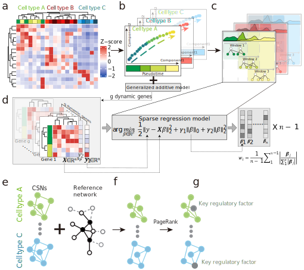

pak
# install.packages("pak") pak::pak("mengxu98/inferCSN")
git clone
git clone https://github.com/mengxu98/inferCSN.git cd inferCSN sh scripts/requirements.sh sudo R CMD INSTALL . # Some packages may prompt not available, please install.
How to use inferCSN? Please reference here.
inferCSN
here